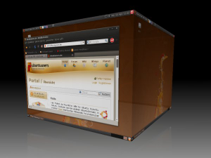

Compiz
Dieser Artikel wurde für die folgenden Ubuntu-Versionen getestet:
Ubuntu 14.04 Trusty Tahr
Zum Verständnis dieses Artikels sind folgende Seiten hilfreich:
Compiz  ist ein Composite- und Fenstermanager, der in Verbindung mit einer passenden Grafikkarte und anderer Software für die Darstellung beeindruckender Effekte auf dem Desktop sorgt. Das Projekt Compiz Fusion bot Ergänzungen zu Compiz an, darunter zusätzliche Effekte in Form von Plugins. Inzwischen sind beide Projekte wieder unter einem gemeinsamen Namen zusammengefasst.
ist ein Composite- und Fenstermanager, der in Verbindung mit einer passenden Grafikkarte und anderer Software für die Darstellung beeindruckender Effekte auf dem Desktop sorgt. Das Projekt Compiz Fusion bot Ergänzungen zu Compiz an, darunter zusätzliche Effekte in Form von Plugins. Inzwischen sind beide Projekte wieder unter einem gemeinsamen Namen zusammengefasst.
Compiz nutzt – wenn möglich – Hardwarebeschleunigung. Dazu werden Fenster in Texturen verwandelt und direkt in der Grafikkarte zum sichtbaren Desktop zusammengesetzt. Damit wird das Verschieben eines Fensters fast vollständig von der Grafikkarte übernommen und der Prozessor stark entlastet. Gleichzeitig können die Funktionen der Grafikkarte genutzt werden, um die Texturen zu manipulieren. So kann man beispielsweise näher an ein Fenster heranzoomen, hat also eine eingebaute Bildschirmlupe.
Die Hardwarebeschleunigung macht auch die vielen Effekte möglich, die Compiz so bekannt machen. Beispielsweise können sich die Texturen beim Verschieben verformen, zu einem dreidimensionalen Würfel zusammengesetzt werden oder beim Schließen eines Fensters "abbrennen".
Das von Ubuntu präferierte Unity setzt Compiz als Composite- und Fenstermanager ein.
Installation¶

Voraussetzungen¶
Damit die Hardwarebeschleunigung genutzt werden kann, stellt Compiz bestimmte Anforderungen an die Hardware, den Treiber und den Xserver – sind diese Anforderungen nicht erfüllt, wird Compiz nicht starten!
Die genauen Voraussetzungen für den Einsatz von Compiz sind unter [1] zusammengefasst.
Paketinstallation¶
Compiz ist unter Ubuntu standardmäßig installiert. Folgende Pakete müssen installiert [2] sein:
compiz
compiz-gnome (optional, für den GNOME-Desktop)
compiz-plugins-extra (universe, optional, weitere Effekte und Animationen)
 mit apturl
mit apturl
Paketliste zum Kopieren:
sudo apt-get install compiz compiz-gnome compiz-plugins-extra
sudo aptitude install compiz compiz-gnome compiz-plugins-extra
Nutzung¶
Compiz starten¶
KDE¶
Ab Kubuntu 8.10 bzw. KDE 4.1 beherrscht der Fenstermanager von KDE native Effekte, welche standardmäßig aktiviert sind. Compiz wird also nicht benötigt.
Xfce¶
Hinweis:
Xfce und damit auch Xubuntu enthalten einen eigenen Composite-Manager. Siehe Xfce Composite-Effekte.
Damit Compiz in Xfce genutzt werden kann, müssen vorher einige Compiz Plugins mit Hilfe von CCSM (CompizConfig Einstellungs-Manager) aktiviert werden, um eine brauchbare Arbeitsumgebung zu erstellen:
"Window Decoration" (Fensterrahmen + Bedienknöpfe)
"Move Window" (Fenster verschieben)
"Resize Window" (Fenstergröße ändern)
Um dauerhaft xfwm4, den Fenstermanager von Xfce, durch Compiz zu ersetzen, wird in der Datei ~/.config/xfce4/xfconf/xfce-perchannel-xml/xfce4-session.xml die Zeile mit:
1 | <property name="Client0_Command" type="empty"/> |
ersetzt durch:
1 2 3 | <property name="Client0_Command" type="array"> <value type="string" value="compiz"/> </property> |
MATE¶
Unter Ubuntu MATE verwendet man MATE Tweak, um Compiz zu aktivieren. Es stehen zwei Voreinstellungen mit unterschiedlichen Effekten zur Verfügung. Die Einstellung "keine" deaktiviert Compiz vollständig.
Compiz beenden¶
Die Desktop-Effekte über Compiz können auch wieder deaktiviert werden. Alternativ kann man Compiz über einen Befehl deaktivieren. Weil Compiz ein alternativer Fenstermanager ist, ersetzt man Compiz durch einen anderen Fenstermanager. Zu diesem sollte man vorher zurückkehren, wenn man Compiz deinstallieren möchte. Für Xfce lautet das Kommando:
xfwm4 --replace &
Plugins¶
Die meisten Plugins von Compiz werden im Artikel CompizConfig Einstellungs-Manager erläutert. Außerdem findet man auf der Seite Compiz Plugins eine Liste der Compiz-Plugins mit zusätzlichen Beschreibungen.
Standardtastenkürzel einiger Plugins¶
| Aktion | Tasten |
| Fenster wechseln | Alt + Tab ⇆ |
| Fenster in entgegengesetzte Richtung wechseln | Alt + ⇧ + Tab ⇆ |
| Alle Fenster übersichtlich darstellen (Expose-Funktion bzw. Miniaturansicht) | Windows + W oder ⇧ + Alt + ↑ , dann mit ← , → , ↑ , ↓ und ⏎ das gewünschte Fenster auswählen |
| Würfelseite wechseln | Strg + Alt + → / ← |
| Würfelseite wechseln und das aktivierte Fenster mitnehmen | Strg + Alt + ⇧ + → / ← |
| Würfel zum Filmstreifen aufklappen |
Strg +
Alt +
↓ , dann kann man den Streifen bei gehaltener Tastenkombination Strg + Alt + → / ← nach rechts und links verschieben |
| Würfel mit der Maus drehen |
Strg +
Alt +  |
| Einmalig reinzoomen |
Windows +  |
| Manuell reinzoomen | Windows + Mausrad hoch |
| Manuell rauszoomen | Windows + Mausrad runter |
| Fenster bewegen |
Alt + |
| Fenstergröße verändern |
Alt +  |
| Hervorholen des nächsttieferen Fensters |
Alt + |
| Wasser | Strg + Windows |
| Regen | ⇧ + F9 |
| Transparenz verändern | Alt + Mausrad hoch/runter |
| Zeitlupeneffekt | ⇧ + F10 |
Konfiguration¶
Mit dem Compiz CCSM lassen sich die visuellen Effekte von Compiz bis ins kleinste Detail einstellen.
Problembehebung¶
Mitunter hilft bereits, das Programm neu zu konfigurieren:
sudo dpkg-reconfigure compiz
Ansonsten ist unter Compiz/Problembehebung eine ausführliche Darstellung zu finden.
Links¶
Projektseite
- inkl. Dokumentation und DiskussionsforumCube And Effects for Ubuntu, Xubuntu, Lubuntu, Kubuntu and Edubuntu in release 10.04, 11.10 and 12.04
- Ubuntu Wiki

- Erstellt mit Inyoka
-
 2004 – 2017 ubuntuusers.de • Einige Rechte vorbehalten
2004 – 2017 ubuntuusers.de • Einige Rechte vorbehalten
Lizenz • Kontakt • Datenschutz • Impressum • Serverstatus -
Serverhousing gespendet von